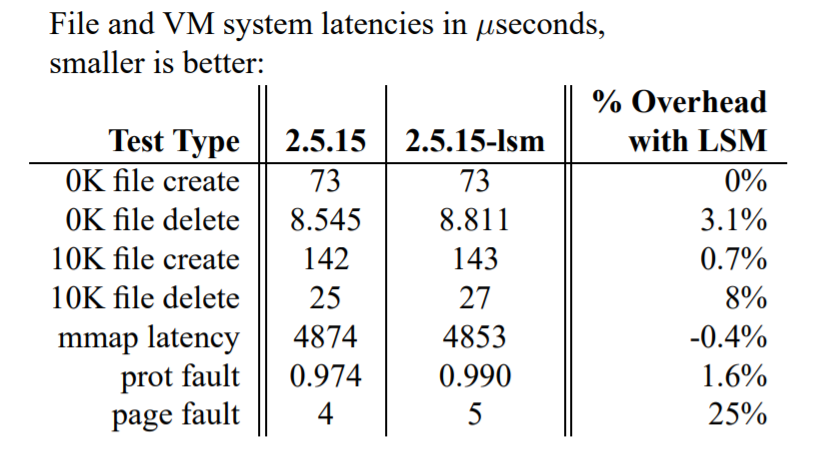

简单分析了 LSM（Linux 安全模块）的设计与实现，基于 Linux 5.10 版本的源码。
背景
- 主流操作系统的访问控制机制不足以提供强安全
- 已有部分访控模型实现
- 安全社区在通用解决方案上难达成一致
- Linux 支持动态加载内核模块
- 可以将增强的访问控制实现成 Linux 内核模块以支持多种安全模型
- 内核未提供任何基础设施来支持内核模块去管理访控
- 内核模块只能在系统调用上做访控，有很大限制
- 内核模块经常要求重实现内核功能或内核补丁来支持模块，非常麻烦
- Linux Kernel 2.5 Summit 上 NSA 提出了 SELinux，想要并入主线，Linus 拒绝了该提议，因为他观察到有很多安全模块都在开发中，倾向于做一个新的基础设施来支持内核模块实现安全，这样也避免了选择一个现有的安全模块
问题
- 平衡内核开发者和多个安全项目的需要
- Linus 要求：
- 足够通用，使用另一个安全模型 = 加载另一个内核模块
- 概念简单，对内核影响最少，高效
- 可以支持目前的 POSIX.1e 能力，作为一个可选的安全模块
- 系统调用接口
- 优点：覆盖系统调用查找表不需要对内核进行修改
- 缺点：可能会出现重复代码，无法提供足够的上下文来做出决策
- LSM：轻量、通用的访控框架，使不同的访控模型可以实现成可加载的内核模块
- 用相同的基础 linux 内核支持不同的安全模型，同时最小化对内核的影响
设计
- 基本抽象：管理对内在内核对象的访问（* 主体 S 能对客体 OBJ 进行内核操作 OP 吗？*）
- 使用 Hook 实现，在访问前调用。可以获得完整的内核上下文
- LSM 模块是限制性（restrictive）的：只有当内核即将授予权限时，模块才会去检查；如果内核本来就要拒绝，则不会调用模块。最少影响
- 能力有的时候会放行一个内核本来拒绝的请求，LSM 通过 Permissive LSM hook 来支持。该 hook 允许安全策略去重载一个 DAC 约束
- 在内核对象加入 security fields，可以让安全属性绑定到内核对象。但是模块必须全权管理这个 field
- 模块组合（Module Composition）是一个挑战
- 模块组合可以提供更完全的功能
- 策略组合很难处理
- 提供模块堆栈，但让模块本身去完成大部分工作，即模块自身需导出 LSM-like 的接口，然后自己去调用其他模块
实现
- 给内核数据结构加入了安全域
- 在内核代码中插入了安全钩函数
- 提供钩函数注册的方法
- 加入了通用安全系统调用
- 将能力实现成了一个可选的安全模块
安全域
Security field
- 是一个
void*指针 - 大部份管理工作都交给安全模块，不提供锁
- LSM 仅提供了这个
field以及一些钩函数去管理这个fieldalloc_security：分配空间free_security：释放空间- 设置安全域
1 | //include/linux/sched.h |
Hook
- 在
include/linux/lsm_hooks.h中列举了所有钩函数 - 声明在
include/linux/lsm_hook_defs.h中 - 所有钩函数在
security_hook_heads结构体中，按钩函数点分类1
2
3
4
5
6//include/linux/lsm_hooks.h
struct security_hook_heads {
} __randomize_layout;1
2
3
4//include/linux/types.h
struct hlist_head {
struct hlist_node *first;
};### 初始化1
2
3
4//include/linux/types.h
struct hlist_node {
struct hlist_node *next, **pprev;
};
1 | //security/security.c |
1 |
1 | //include/linux/lsm_hooks.h |
security_hook_list代表一个 hook 点上定义的一个钩函数security_list_options定义了可选的 hook 函数，每一个security_hook_list对应的 hook 函数一定要是其中之一LSM_HOOK_INIT初始化一个security_hook_list
1 | //security/commoncap.c |
注册钩函数
1 | //security/security.c |
LSM_HOOK_INIT初始化security_hook_list
1 | //fs/namei.c |
- 举例
vfs_mkdir () - 为什么不在
permission或may_create里插入：缺少操作类型以及 mode - 另一种方法：对
mkdir打桩。提供相同功能，但也允许内核模块去实现更多的一般功能。因为内核模块可以使用非 GPL 的许可，这样实现可能不利于 LSM 被内核开发者接受
1 | //security/security.c |
系统调用
System Call
- LSM 提供了一个通用
security ()系统调用，让安全模块去实现以供安全感知的应用去调用 - 是一个多路复用器
- 提供一个
sys_security钩函数 - 入口点可能不充分，则可以自己实现然后替换系统调用表
能力
Capability
- LSM 实现成一个模块
- 能力：分割超级用户的权限并授予特定的进程
- 于是 LSM 需要提供一个至少和能力有相同粒度的许可接口
- LSM 保留了内核中用于执行能力检查的现有接口，但将其简化为 LSM 钩函数的简单包装，允许其在安全模块中实现任何需要的逻辑
- 这种实现避免了对内核的大量更改
1 | //kernel/capability.c |
1 | //security/security.c |
- 能力集合存在
task_struct中，也可以移动到security_field中，但是不移可以支持在上面堆叠其他模块 - 模块堆叠的一个难点在于共享安全域，而很多模块希望与能力堆叠
- 能力已存在主线一段时间
- 有些应用依赖于能力，如
named和sendmail
- 不移动的话简化了这种模块组合，但是也浪费了不需要能力的模块的空间
- 能力有两个系统调用
capset和capget，LSM 保留了这两个系统调用，但是将其替换为对 LSM 钩函数的调用。 - 将 bit vector 移到安全域和重新放置系统调用接口是使能力称为独立模块的最后两步
钩函数分类
任务钩函数
- 管理安全域
- 对进程间操作的控制 (
kill) - 对进程特权操作的控制 (
setuid) - 对资源管理操作的细粒度控制 (
setrlimit和nice)
程序加载钩函数
- 安全模块要求执行新程序更改特权
- LSM 提供一组钩子，在
execve的关键点调用 linux_binprm结构中的安全域允许模块在程序加载时去管理安全信息- 允许安全模块去初始化该结构并在加载程序前访问访控信息
- 允许安全模块在新程序加载成功后更新安全信息
IPC 钩函数
- 可通过 IPC 钩函数去管理 IPC 的安全信息和访控
- IPC 对象共享一个
kern_ipc_perm数据结构，且在检查权限时只有一个指针传向ipcperms函数，因此 LSM 在这个数据结构里插入了一个安全域 - LSM 在
msg_msg结构里插入安全域以支持独立消息 - LSM 在
ipcperms函数中插入了钩函数，使模块可以对现有的 Linux IPC 权限检查进行检查 - LSM 还将钩函数插入到各个 IPC 操作上，提供关于操作类型和特定参数的信息
- 还支持对 SystemV 消息队列发送的单个消息进行细粒度控制
文件系统钩函数
- 三种钩函数：文件系统钩函数、
inode钩函数、文件钩函数 - 对
super_block、inode、file数据结构均插入了安全域 - 文件系统钩函数让模块控制例如
mounting和statfs的操作 inode钩函数插到了permission函数中，另外也支持对独立 inode 操作的细粒度控制- 文件钩函数允许安全模块在文件操作（
read和write）中进行额外安全检查 - 可以不往
inode和super_block中放安全域，改到dentry和vfsmount中- 前一对对应具体的对象，独立于名称和名字空间
- 后一对有对对应
inode和super_block的引用，也和一个具体名称和名字空间关联。 - 使用前一对的话避免了对象重名的问题
- 且还提供了对内核对象的更多覆盖，因为这些结构也表示非文件对象，如管道和套接字。
网络钩函数
- 应用层对网络的访问是通过套接字钩函数协调的
- 包含所有套接字系统调用的插入，为所有套接字协议提供了粗粒度的中介覆盖
- 因为用户套接字具有对应的 inode 结构，因此没有将安全域插入到套接字结构中
其他钩函数
- 模块钩函数：用于控制创建、初始化和删除内核模块的操作
- 系统钩函数：用于控制系统操作如设置系统主机名，访问 IO 端口等。能力可以对这些操作进行检查，但是粗粒度，且不提供参数信息
性能
- 耦合的能力 vs 作为 LSM 模块的能力
- LSM 开销是 LSM 框架的开销 + 模块开销
|  |

|
待补充
- 钩函数点
- 访控
- 管理钩函数
- 能力模块遗留的安全风险
- 实现安全模块，实现钩函数